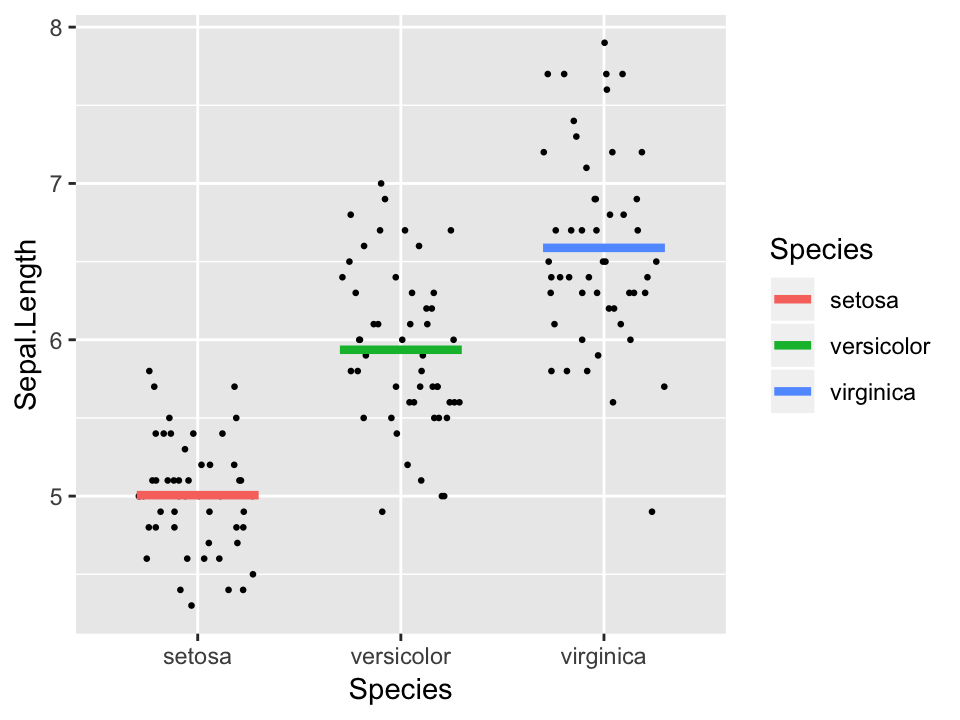
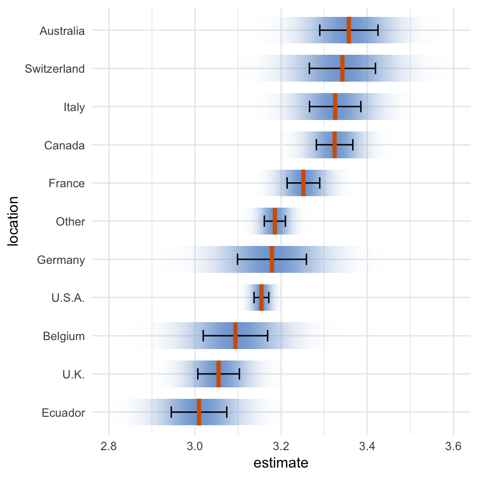

Miscellaneous geoms and stats
Claus O. Wilke
2019-01-07
Source:vignettes/misc-geoms-stats.Rmd
misc-geoms-stats.RmdThe package provides a few miscellaneous geoms and stats that can be generally helpful when generating uncertainty visualizations.
Horizontal and vertical plines
When showing an individual value, such as a mean, we may want to show it as a vertical or horizontal line instead of a point. For this purpose, ungeviz provides horizontal and vertical point lines (plines), through the two geoms geom_hpline() and geom_vpline(). These geoms behave like points but can be styled like lines. They have the useful advantage over geom_segment() that they work with both continuous and discrete position scales.
library(ggplot2)
library(ungeviz)
ggplot(iris, aes(Species, Sepal.Length)) +
geom_point(position = position_jitter(width = 0.3, height = 0), size = 0.5) +
geom_hpline(aes(colour = Species), stat = "summary", width = 0.6, size = 1.5)
Plines have a length and a thickness. The length is specified as width and height, respectively, for the horizontal and vertical variants. The thickness is always specified as size. Note that width and height specify the total length of the pline, whereas the equally named parameters in position_jitter() specify only the linear extent in one direction. Therefore, in the above example, we use width = 0.3 for position_jitter() and width = 0.6 for geom_hpline().
Plines can be combined with error bars to show parameter estimates and their uncertainties in a regression model.
library(dplyr)
library(forcats)
library(broom)
library(emmeans)
cacao_lumped <- cacao %>%
mutate(
location = fct_lump(location, n = 10)
)
cacao_means <- lm(rating ~ location, data = cacao_lumped) %>%
emmeans("location") %>%
tidy() %>%
mutate(location = fct_reorder(location, estimate))
ggplot(cacao_means, aes(x = estimate, y = location)) +
geom_errorbarh(aes(xmin = estimate - std.error, xmax = estimate + std.error), height = 0.3) +
geom_vpline(aes(x = estimate), size = 1.5, height = 0.7, color = "#D55E00") +
xlim(2.8, 3.6) +
theme_minimal()
Confidence strips and confidence densities
Sometimes we may want to visualize the uncertainty distributions as colored bands that fade out (called confidence strips). Confidence strips can be generated with stat_confidence_density(). This stat takes as input a mean value (mapped to x), a margin of error (mapped to moe), and a confidence level corresponding to the margin of error (mapped to confidence). It uses these inputs to calculate the corresponding density function for a normal distribution, which it provides as new variable stat(density). A stat(ndensity) is also provided, which is scaled so its maximum value is one. stat_confidence_density() automatically maps the normalized density to the alpha aesthetic, so that we can draw confidence strips simply by specifying a fill color.
ggplot(cacao_means, aes(x = estimate, y = location)) +
stat_confidence_density(aes(moe = std.error), confidence = 0.68, fill = "#81A7D6", height = 0.7) +
geom_errorbarh(aes(xmin = estimate - std.error, xmax = estimate + std.error), height = 0.3) +
geom_vpline(aes(x = estimate), size = 1.5, height = 0.7, color = "#D55E00") +
xlim(2.8, 3.6) +
theme_minimal()
There is one important caveat for stat_confidence_density(): It will generally not work for non-linear or transformed scales, because it uses the margin of error to fit a normal distribution and the moe is not modified by these scale transformation. I would recommend against using stat_confidence_density() with anything but a standard linear scale.
We can combine stat_confidence_density() also with other geoms. For example, we can draw the confidence distributions as ridgelines.
library(ggridges)
ggplot(cacao_means, aes(x = estimate, y = location)) +
stat_confidence_density(
aes(moe = std.error, height = stat(density)), geom = "ridgeline",
confidence = 0.68, fill = "#81A7D6", alpha = 0.8, scale = 0.08,
min_height = 0.1
) +
geom_vpline(aes(x = estimate), size = 1.5, height = 0.5, color = "#D55E00") +
xlim(2.8, 3.6) +
theme_minimal()